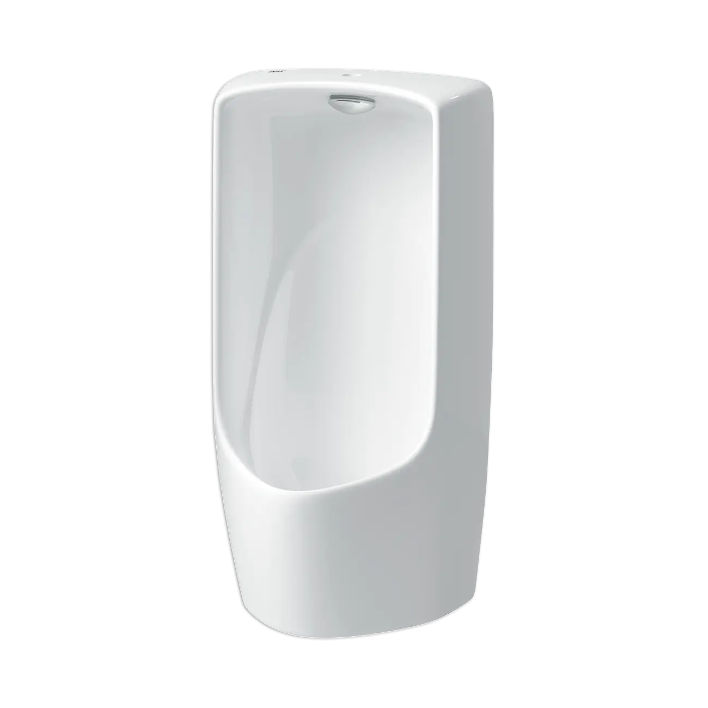
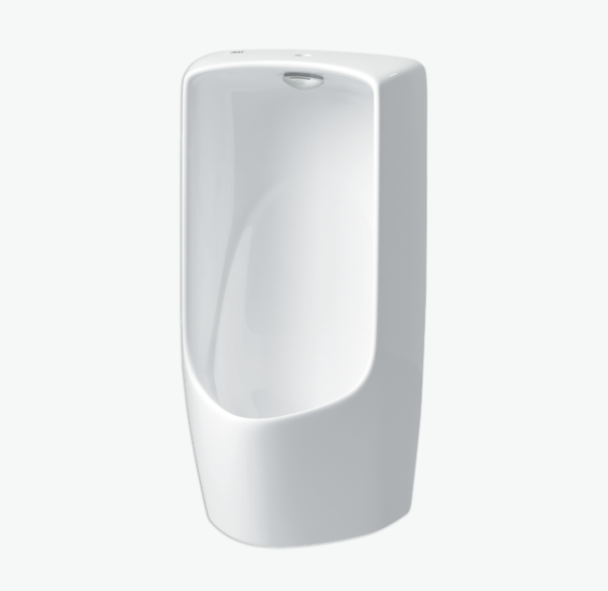
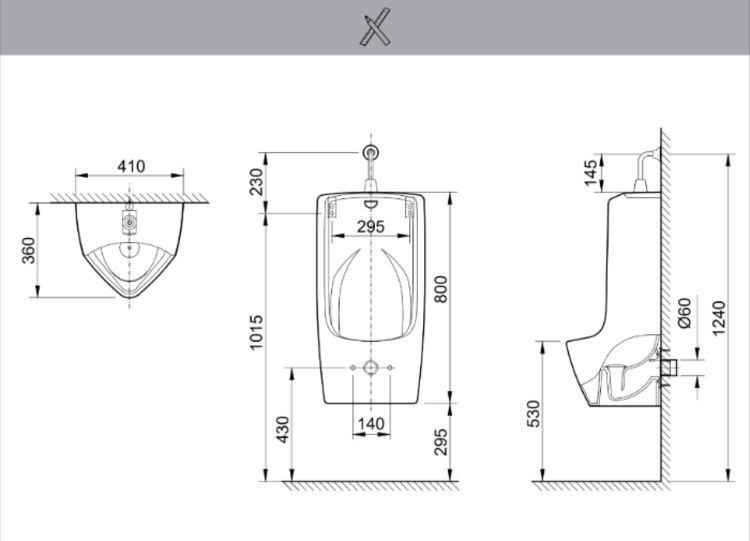

Là bồn tiểu cỡ lớn thuộc dòng treo tường cao cấp, bồn tiểu nam AU-411V không chỉ mang đến sự thoải mái khi sử dụng mà còn vô cùng bền bỉ khi sử dụng nhờ vào công nghệ AQUA CERAMIC chống bám bẩn đột phá. Sản phẩm phù hợp lắp đặt tại các trung tâm thương mại, sân bay và các khu phức hợp lớn.Kích thước lớn, thiết kế treo tường hiện đạiBồn tiểu nam AU-411V được thiết kế treo tường tinh tế, giúp tối ưu hóa không gian sàn nhà, mang đến sự gọn gàng, hiện đại cho phòng vệ sinh. Với thiết kế này, khu vực sàn được làm sạch dễ dàng, nhanh chóng và hạn chế các góc khuất tích tụ bụi bẩn và vi khuẩn.Với kích thước 360 x 410 x 808 mm, bồn tiểu nam AU-411V có khả năng hứng và xả hiệu quả, hạn chế tình trạng nước bắn ra ngoài, giúp không gian xung quanh luôn khô ráo và sạch sẽ hơn.Được chế tạo từ chất liệu sứ cao cấp nung ở nhiệt độ cao, AU-411V còn có tính bền vượt trội, chống trầy xước và giữ vẻ ngoài sáng bóng như mới.Công nghệ AQUA CERAMIC chống bám bẩn vượt trộiĐiểm ưu việt của bồn tiểu nam AU-411V là được ứng dụng công nghệ AQUA CERAMIC chống bám bẩn độc quyền của thương hiệu INAX. Đây được xem là một phát minh mang tính cách mạng đã được kiểm chứng về khả năng duy trì độ sạch sẽ gần như tuyệt đối, giúp bề mặt sứ trắng sạch, bền bỉ đến 100 năm.Bên cạnh việc chống bám bẩn, công nghệ AQUA CERAMIC còn ngăn chặn sự hình thành và tích tụ của các vết bẩn cứng đầu do cặn nước, cặn bẩn hay vi khuẩn gây ra. Nhờ vậy, chỉ cần một lần xả nước hoặc lau nhẹ là bạn có thể loại bỏ các vết bẩn mà không cần sử dụng hóa chất tẩy rửa mạnh, vừa ảnh hưởng sức khỏe vừa gây ra mùi hôi khó chịu mỗi lần vệ sinh.Video giới thiệu về công nghệ AQUA CERAMIC độc quyền của INAX:Hiệu suất xả rửa ổn địnhBồn tiểu nam INAX AU-411V được thiết kế tương thích với áp lực nước từ 0.07 đế 0.75 MPa, đảm bảo bồn tiểu xả sạch hiệu quả và đồng đều, bất kể áp lực nước của công trình là cao hay thấp. Với đầu phun rửa đi kèm, dòng nước được phân bổ tối ưu cho công đoạn xả sạch nước thải.Bản vẽ bồn tiểu nam AU-411VFile hướng dẫn lắp đặt chi tiết: HDLD AU-411V U-411V.pdfThông số kỹ thuậtChất liệuSứDạngTreo, cỡ lớnKích thước360 x 410 x 808 mm (Sâu x Rộng x Cao)Đặc điểm- Công nghệ AQUA CERAMIC chống bám bẩn - Áp lực nước 0.07 - 0.75 MPaThương hiệuINAXKhác- Sản phẩm đã bao gồm đầu phun rửa, gioăng cao su nối tường - Hotline tư vấn và bảo hành: 18006633
Bồn tiểu nam AU-411V
Bồn tiểu thương hiệu INAX.
Đã cập nhật danh sách yêu thích.
DANH MỤC: Bồn tiểu
MÃ SẢN PHẨM: AU-411V
DEPTH: 360mm
HEIGHT: 800mm
WIDTH: 410mm
Là bồn tiểu cỡ lớn thuộc dòng treo tường cao cấp, bồn tiểu nam AU-411V không chỉ mang đến sự thoải mái khi sử dụng mà còn vô cùng bền bỉ khi sử dụng nhờ vào công nghệ AQUA CERAMIC chống bám bẩn đột phá. Sản phẩm phù hợp lắp đặt tại các trung tâm thương mại, sân bay và các khu phức hợp lớn.Kích thước lớn, thiết kế treo tường hiện đạiBồn tiểu nam AU-411V được thiết kế treo tường tinh tế, giúp tối ưu hóa không gian sàn nhà, mang đến sự gọn gàng, hiện đại cho phòng vệ sinh. Với thiết kế này, khu vực sàn được làm sạch dễ dàng, nhanh chóng và hạn chế các góc khuất tích tụ bụi bẩn và vi khuẩn.Với kích thước 360 x 410 x 808 mm, bồn tiểu nam AU-411V có khả năng hứng và xả hiệu quả, hạn chế tình trạng nước bắn ra ngoài, giúp không gian xung quanh luôn khô ráo và sạch sẽ hơn.Được chế tạo từ chất liệu sứ cao cấp nung ở nhiệt độ cao, AU-411V còn có tính bền vượt trội, chống trầy xước và giữ vẻ ngoài sáng bóng như mới.Công nghệ AQUA CERAMIC chống bám bẩn vượt trộiĐiểm ưu việt của bồn tiểu nam AU-411V là được ứng dụng công nghệ AQUA CERAMIC chống bám bẩn độc quyền của thương hiệu INAX. Đây được xem là một phát minh mang tính cách mạng đã được kiểm chứng về khả năng duy trì độ sạch sẽ gần như tuyệt đối, giúp bề mặt sứ trắng sạch, bền bỉ đến 100 năm.Bên cạnh việc chống bám bẩn, công nghệ AQUA CERAMIC còn ngăn chặn sự hình thành và tích tụ của các vết bẩn cứng đầu do cặn nước, cặn bẩn hay vi khuẩn gây ra. Nhờ vậy, chỉ cần một lần xả nước hoặc lau nhẹ là bạn có thể loại bỏ các vết bẩn mà không cần sử dụng hóa chất tẩy rửa mạnh, vừa ảnh hưởng sức khỏe vừa gây ra mùi hôi khó chịu mỗi lần vệ sinh.Video giới thiệu về công nghệ AQUA CERAMIC độc quyền của INAX:Hiệu suất xả rửa ổn địnhBồn tiểu nam INAX AU-411V được thiết kế tương thích với áp lực nước từ 0.07 đế 0.75 MPa, đảm bảo bồn tiểu xả sạch hiệu quả và đồng đều, bất kể áp lực nước của công trình là cao hay thấp. Với đầu phun rửa đi kèm, dòng nước được phân bổ tối ưu cho công đoạn xả sạch nước thải.Bản vẽ bồn tiểu nam AU-411VFile hướng dẫn lắp đặt chi tiết: HDLD AU-411V U-411V.pdfThông số kỹ thuậtChất liệuSứDạngTreo, cỡ lớnKích thước360 x 410 x 808 mm (Sâu x Rộng x Cao)Đặc điểm- Công nghệ AQUA CERAMIC chống bám bẩn - Áp lực nước 0.07 - 0.75 MPaThương hiệuINAXKhác- Sản phẩm đã bao gồm đầu phun rửa, gioăng cao su nối tường - Hotline tư vấn và bảo hành: 18006633
DANH MỤC: Bồn tiểu
MÃ SẢN PHẨM: AU-411V
DEPTH: 360mm
HEIGHT: 800mm
WIDTH: 410mm